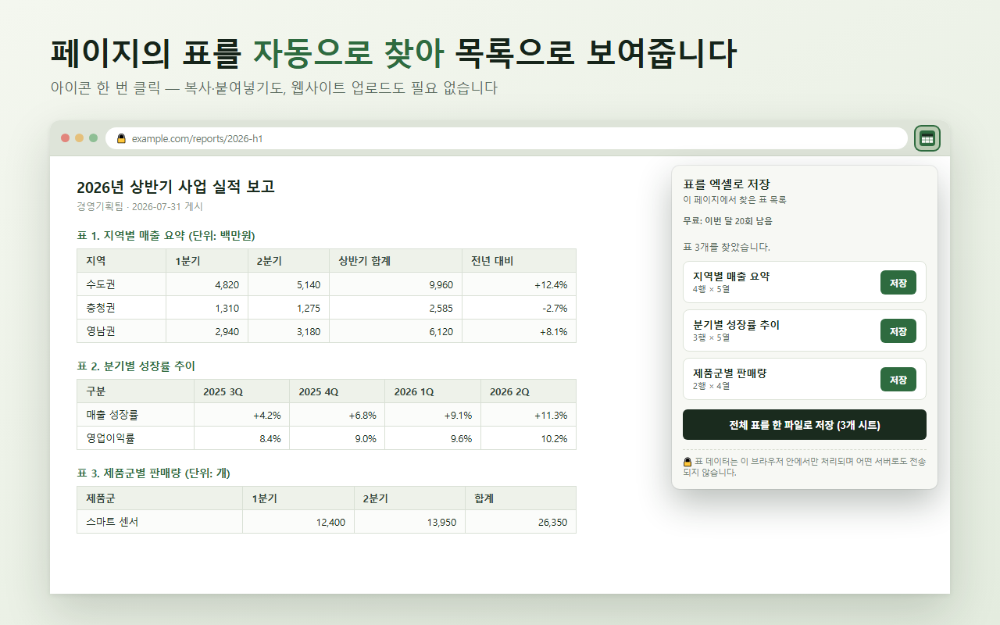
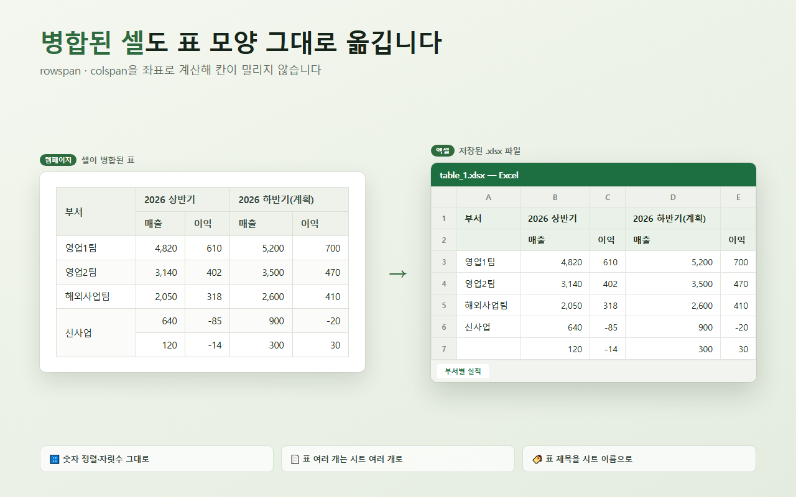

표를 엑셀로 저장
(Table to Excel)
웹페이지의 표를 클릭 한 번으로 엑셀(.xlsx) 파일로 저장하는 Chrome 확장 프로그램입니다.
이런 일을 대신합니다
웹페이지의 표를 엑셀로 옮기려고 드래그 → 복사 → 붙여넣기를 하면 셀이 밀리거나 서식이 깨져 매번 다시 정리해야 합니다. 이 확장 프로그램은 페이지에 있는 표를 직접 읽어 엑셀 파일로 만들어 줍니다.

사용법
- 표가 있는 웹페이지를 엽니다.
- 툴바의 확장 프로그램 아이콘을 클릭합니다.
- 표 목록에서 원하는 표 옆의 저장을 누르면 .xlsx 파일이 바로 다운로드됩니다.
표가 여러 개면 전체 표를 한 파일로 저장으로 시트를 나눠 한 번에 받을 수 있습니다.
병합된 셀도 그대로
rowspan · colspan으로 병합된 셀을 좌표로 계산해 옮기기 때문에 칸이 밀리지 않습니다.

요금
| 무료 | 매달 20회까지 저장. 기능 제한 없음. 매달 1일 자동 초기화. |
|---|---|
| Pro | 평생 라이선스 1회 결제로 저장 횟수 무제한, PC 3대까지 등록. 구독이 아니며 기간 만료가 없습니다. 구매와 라이선스 키 발급은 결제 처리사 Lemon Squeezy가 담당합니다. |
구매는 확장 프로그램 팝업의 안내 화면에서 진행할 수 있습니다.
라이선스 키 등록하기
결제가 끝나면 입력하신 이메일로 라이선스 키가 자동으로 발송됩니다. 메일이 보이지 않으면 스팸함도 확인해 주세요.
- 메일에 있는 라이선스 키를 복사합니다.
(
XXXXXXXX-XXXXXXXX-…형태입니다) - 크롬 툴바의 표를 엑셀로 저장 아이콘을 클릭합니다.
- 안내 상자의 입력칸에 키를 붙여넣고 등록을 누릅니다.
- 팝업 상단 배지가 ✓ Pro — 무제한으로 바뀌면 완료입니다.
입력칸이 보이지 않나요? 이번 달 무료 사용량이 아직 남아 있으면 안내 상자가 표시되지 않습니다. 무료 20회를 모두 사용하면 나타납니다. (다음 업데이트에서 언제든 등록할 수 있도록 개선할 예정입니다. 먼저 등록이 필요하시면 메일로 알려주세요.)
같은 키로 PC 3대까지 등록할 수 있습니다. 기기를 교체해 등록 가능 대수를 넘겼다면 메일로 문의해 주시면 초기화해 드립니다.
알아두실 점
- HTML
<table>태그로 만들어진 표를 인식합니다. div로 그린 표(일부 웹앱)는 현재 버전에서 인식되지 않을 수 있습니다. - 크롬 정책상
chrome://로 시작하는 브라우저 내부 페이지에서는 동작하지 않습니다.
개인정보
개인정보를 수집하지 않습니다. 자세한 내용은 개인정보처리방침을 확인해 주세요.
문의
버그 제보, 기능 요청, 라이선스·환불 문의는 pygichacha@gmail.com 으로 보내주세요. 보통 하루 안에 답장드립니다.